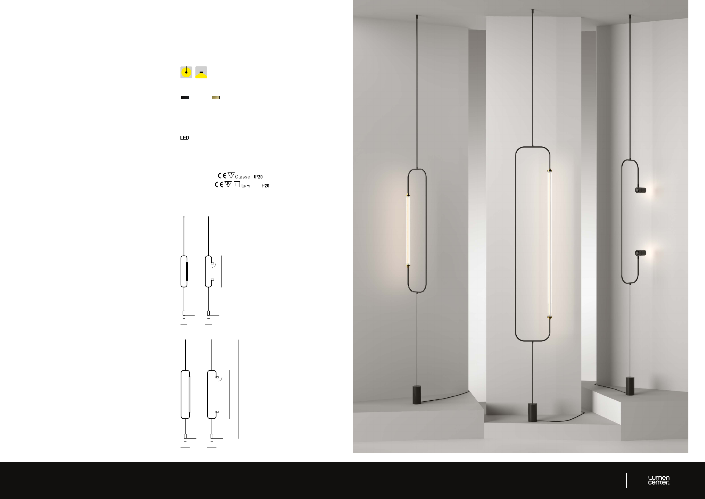

28
_
Lampada da sotto - pavimento, con ancoraggio a
sotto adattabile a varie altezze e alimentazione da presa
elettrica a parete.
Disponibile con vetro Pyrex lineare a forma di fiore o con
proiettori orientabili. I proiettori montano LED di nuova
generazione “blue hazard free” con CRI >97 e driver
“flicker free” la rendono una lampada ad alto comfort
visivo.
Finitura in Nero FT e arricchita da dettagli in ottone.
_
Ceiling - floor lamp, mounted to the ceiling and adaptable
to various heights with plug-in power from electrical wall
outlet.
Available with linear Pyrex glass in flower shape or with
adjustable projectors. The new generation LED spotlights
“blue hazard free” with CRI >97 and driver “flicker free”
make it a lamp with high visual comfort.
Black FT finish and enriched with brass details.
_
Plafonnier - lampadaire, avec ancrage au plafond
adaptable à diérentes hauteurs et alimentation par prise
électrique murale.
Disponible avec verre Pyrex linéaire en forme de fleur ou
avec des projecteurs orientables. Les projecteurs sont
équipés de LED de nouvelle génération “blue hazard free”
avec CRI >97 et driver “flicker free” en font une lampe à
haut confort visuel.
Finition en Noir FT et enrichie de détails en laiton.
_
Decke - Stehleuchte, an der Decke montiert und an
verschiedene Höhen mit Steckdosenleiste anpassbar.
Erhältlich mit linearem Pyrex-Glas in Blütenform oder mit
verstellbaren Projektoren. Die LED-Strahler der neuen
Generation “blue hazard free” mit CRI >97 und Treiber
driver “flicker free” machen sie zu einer Leuchte mit
hohem Sehkomfort.
Schwarzes FT-Finish und mit Messingdetails verziert.
SKYLINES S&P
Design Ahlux
SKYLINES S&P MIDI (linear and spot version)
SKYLINES S&P MAXI (linear and spot version)
Unit: cm
270
270
132
86
24
18
ø 6
ø 6
24
18
ø 6
ø 6
90°
90°
FINISHES
103 FT Black + 152 Satin Brass
ELECTRONIC POWER
Dimmable included
LIGHT SOURCE
220/240V BEAM ANGLE: 50°
SKYLINES S&P LIN. MIDI 6W 780lm 2700K/3000K CRI>90
SKYLINES S&P LIN. MAXI 12W 1560lm 2700K/3000K CRI>90
SKYLINES S&P SPOT 2x15W 2800lm 2700K/3000K CRI>97
CERTIFICATION
SKYLINES S&P LINEAR
SKYLINES S&P SPOT RoHS
D’SOL PTE LTD
Email
sales66@d-soldeco.com
Call WhatsApp Product
Brand
6384 6616 / 8787 6616
Head Office
61 Ubi Rd 1 #01-06 Oxley Bizhub Singapore 408727
Branch Office
65 Ubi Rd 1 #01-63 Oxley Bizhub Singapore 408729